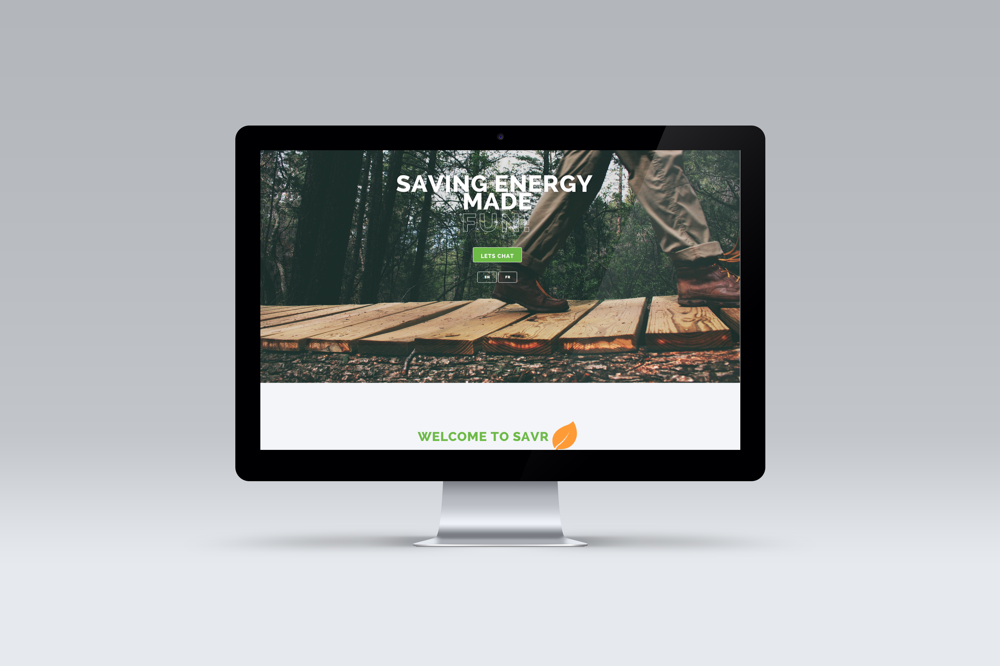

I joined savr as chief of design, responsible for branding and web-development.I built the landing page, inside pages, blog & identity. I focused on keeping the website simple yet interactive for users. HTML5 | CSS | JAVASCRIPT | PHP

LANDING PAGE
With the objective of designing an environmental page, I selected warm colors to fit the energy application. I also depended on Rafeal.js & Chart.js for interactive charts.